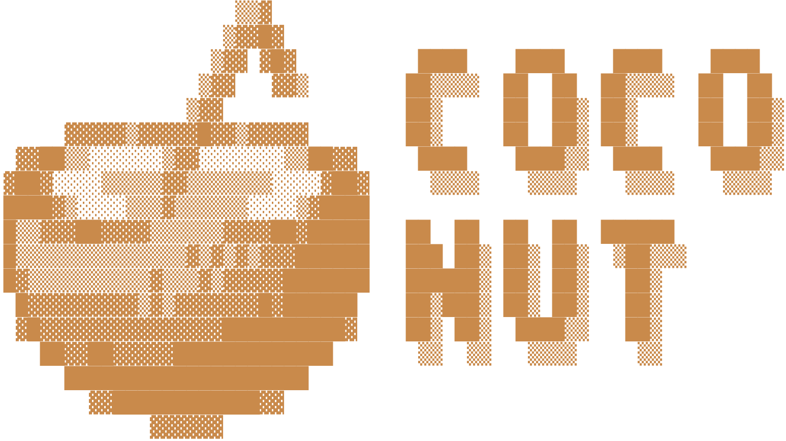

26.4M params · step 20,000
Un mini-LLM decoder-only (RoPE, RMSNorm, SwiGLU, Grouped Query Attention) entrenado
desde cero sobre WikiText-103. Esta página es una demo estática:
reproduce con una animación de escritura los textos reales que generó el modelo
entrenado — sin backend, sin GPU, sin instalar nada. Para generación libre con
cualquier prompt, corre python coconut.py desde el
repositorio, o prueba la
demo con inferencia real.
coconut — bash